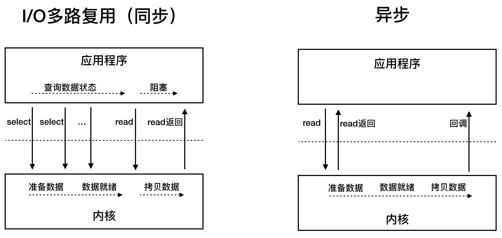
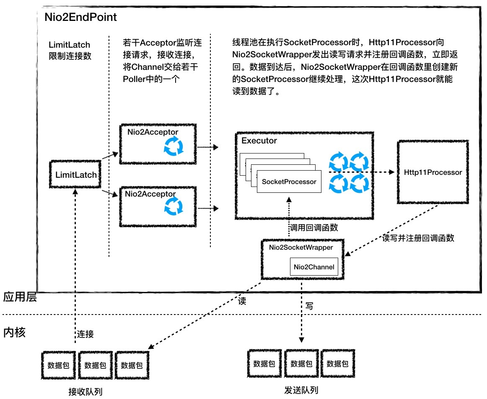

- 00 开篇词 Java程序员如何快速成长？.md.html
- 01 Web容器学习路径.md.html
- 02 HTTP协议必知必会.md.html
- 03 你应该知道的Servlet规范和Servlet容器.md.html
- 04 实战：纯手工打造和运行一个Servlet.md.html
- 05 Tomcat系统架构（上）： 连接器是如何设计的？.md.html
- 06 Tomcat系统架构（下）：聊聊多层容器的设计.md.html
- 07 Tomcat如何实现一键式启停？.md.html
- 08 Tomcat的“高层们”都负责做什么？.md.html
- 09 比较：Jetty架构特点之Connector组件.md.html
- 10 比较：Jetty架构特点之Handler组件.md.html
- 11 总结：从Tomcat和Jetty中提炼组件化设计规范.md.html
- 12 实战：优化并提高Tomcat启动速度.md.html
- 13 热点问题答疑（1）：如何学习源码？.md.html
- 14 NioEndpoint组件：Tomcat如何实现非阻塞I_O？.md.html
- 15 Nio2Endpoint组件：Tomcat如何实现异步I_O？.md.html
- 16 AprEndpoint组件：Tomcat APR提高I_O性能的秘密.md.html
- 17 Executor组件：Tomcat如何扩展Java线程池？.md.html
- 18 新特性：Tomcat如何支持WebSocket？.md.html
- 19 比较：Jetty的线程策略EatWhatYouKill.md.html
- 20 总结：Tomcat和Jetty中的对象池技术.md.html
- 21 总结：Tomcat和Jetty的高性能、高并发之道.md.html
- 22 热点问题答疑（2）：内核如何阻塞与唤醒进程？.md.html
- 23 Host容器：Tomcat如何实现热部署和热加载？.md.html
- 24 Context容器（上）：Tomcat如何打破双亲委托机制？.md.html
- 25 Context容器（中）：Tomcat如何隔离Web应用？.md.html
- 26 Context容器（下）：Tomcat如何实现Servlet规范？.md.html
- 27 新特性：Tomcat如何支持异步Servlet？.md.html
- 28 新特性：Spring Boot如何使用内嵌式的Tomcat和Jetty？.md.html
- 29 比较：Jetty如何实现具有上下文信息的责任链？.md.html
- 30 热点问题答疑（3）：Spring框架中的设计模式.md.html
- 31 Logger组件：Tomcat的日志框架及实战.md.html
- 32 Manager组件：Tomcat的Session管理机制解析.md.html
- 33 Cluster组件：Tomcat的集群通信原理.md.html
- 34 JVM GC原理及调优的基本思路.md.html
- 35 如何监控Tomcat的性能？.md.html
- 36 Tomcat I_O和线程池的并发调优.md.html
- 37 Tomcat内存溢出的原因分析及调优.md.html
- 38 Tomcat拒绝连接原因分析及网络优化.md.html
- 39 Tomcat进程占用CPU过高怎么办？.md.html
- 40 谈谈Jetty性能调优的思路.md.html
- 41 热点问题答疑（4）： Tomcat和Jetty有哪些不同？.md.html
- 特别放送 如何持续保持对学习的兴趣？.md.html
- 结束语 静下心来，品味经典.md.html
- 捐赠
15 Nio2Endpoint组件：Tomcat如何实现异步I_O？
我在专栏上一期里提到了5种I/O模型，相应的，Java提供了BIO、NIO和NIO.2这些API来实现这些I/O模型。BIO是我们最熟悉的同步阻塞，NIO是同步非阻塞，那NIO.2又是什么呢？NIO已经足够好了，为什么还要NIO.2呢？
NIO和NIO.2最大的区别是，一个是同步一个是异步。我在上期提到过，异步最大的特点是，应用程序不需要自己去触发数据从内核空间到用户空间的拷贝。
为什么是应用程序去“触发”数据的拷贝，而不是直接从内核拷贝数据呢？这是因为应用程序是不能访问内核空间的，因此数据拷贝肯定是由内核来做，关键是谁来触发这个动作。
是内核主动将数据拷贝到用户空间并通知应用程序。还是等待应用程序通过Selector来查询，当数据就绪后，应用程序再发起一个read调用，这时内核再把数据从内核空间拷贝到用户空间。
需要注意的是，数据从内核空间拷贝到用户空间这段时间，应用程序还是阻塞的。所以你会看到异步的效率是高于同步的，因为异步模式下应用程序始终不会被阻塞。下面我以网络数据读取为例，来说明异步模式的工作过程。
首先，应用程序在调用read API的同时告诉内核两件事情：数据准备好了以后拷贝到哪个Buffer，以及调用哪个回调函数去处理这些数据。
之后，内核接到这个read指令后，等待网卡数据到达，数据到了后，产生硬件中断，内核在中断程序里把数据从网卡拷贝到内核空间，接着做TCP/IP协议层面的数据解包和重组，再把数据拷贝到应用程序指定的Buffer，最后调用应用程序指定的回调函数。
你可能通过下面这张图来回顾一下同步与异步的区别：

我们可以看到在异步模式下，应用程序当了“甩手掌柜”，内核则忙前忙后，但最大限度提高了I/O通信的效率。Windows的IOCP和Linux内核2.6的AIO都提供了异步I/O的支持，Java的NIO.2 API就是对操作系统异步I/O API的封装。
Java NIO.2回顾
今天我们会重点关注Tomcat是如何实现异步I/O模型的，但在这之前，我们先来简单回顾下如何用Java的NIO.2 API来编写一个服务端程序。
public class Nio2Server {
void listen(){
//1.创建一个线程池
ExecutorService es = Executors.newCachedThreadPool();
//2.创建异步通道群组
AsynchronousChannelGroup tg = AsynchronousChannelGroup.withCachedThreadPool(es, 1);
//3.创建服务端异步通道
AsynchronousServerSocketChannel assc = AsynchronousServerSocketChannel.open(tg);
//4.绑定监听端口
assc.bind(new InetSocketAddress(8080));
//5. 监听连接，传入回调类处理连接请求
assc.accept(this, new AcceptHandler());
}
}
上面的代码主要做了5件事情：
- 创建一个线程池，这个线程池用来执行来自内核的回调请求。
- 创建一个AsynchronousChannelGroup，并绑定一个线程池。
- 创建AsynchronousServerSocketChannel，并绑定到AsynchronousChannelGroup。
- 绑定一个监听端口。
- 调用accept方法开始监听连接请求，同时传入一个回调类去处理连接请求。请你注意，accept方法的第一个参数是this对象，就是Nio2Server对象本身，我在下文还会讲为什么要传入这个参数。
你可能会问，为什么需要创建一个线程池呢？其实在异步I/O模型里，应用程序不知道数据在什么时候到达，因此向内核注册回调函数，当数据到达时，内核就会调用这个回调函数。同时为了提高处理速度，会提供一个线程池给内核使用，这样不会耽误内核线程的工作，内核只需要把工作交给线程池就立即返回了。
我们再来看看处理连接的回调类AcceptHandler是什么样的。
//AcceptHandler类实现了CompletionHandler接口的completed方法。它还有两个模板参数，第一个是异步通道，第二个就是Nio2Server本身
public class AcceptHandler implements CompletionHandler<AsynchronousSocketChannel, Nio2Server> {
//具体处理连接请求的就是completed方法，它有两个参数：第一个是异步通道，第二个就是上面传入的NioServer对象
@Override
public void completed(AsynchronousSocketChannel asc, Nio2Server attachment) {
//调用accept方法继续接收其他客户端的请求
attachment.assc.accept(attachment, this);
//1. 先分配好Buffer，告诉内核，数据拷贝到哪里去
ByteBuffer buf = ByteBuffer.allocate(1024);
//2. 调用read函数读取数据，除了把buf作为参数传入，还传入读回调类
channel.read(buf, buf, new ReadHandler(asc));
}
我们看到它实现了CompletionHandler接口，下面我们先来看看CompletionHandler接口的定义。
public interface CompletionHandler<V,A> {
void completed(V result, A attachment);
void failed(Throwable exc, A attachment);
}
CompletionHandler接口有两个模板参数V和A，分别表示I/O调用的返回值和附件类。比如accept的返回值就是AsynchronousSocketChannel，而附件类由用户自己决定，在accept的调用中，我们传入了一个Nio2Server。因此AcceptHandler带有了两个模板参数：AsynchronousSocketChannel和Nio2Server。
CompletionHandler有两个方法：completed和failed，分别在I/O操作成功和失败时调用。completed方法有两个参数，其实就是前面说的两个模板参数。也就是说，Java的NIO.2在调用回调方法时，会把返回值和附件类当作参数传给NIO.2的使用者。
下面我们再来看看处理读的回调类ReadHandler长什么样子。
public class ReadHandler implements CompletionHandler<Integer, ByteBuffer> {
//读取到消息后的处理
@Override
public void completed(Integer result, ByteBuffer attachment) {
//attachment就是数据，调用flip操作，其实就是把读的位置移动最前面
attachment.flip();
//读取数据
...
}
void failed(Throwable exc, A attachment){
...
}
}
read调用的返回值是一个整型数，所以我们回调方法里的第一个参数就是一个整型，表示有多少数据被读取到了Buffer中。第二个参数是一个ByteBuffer，这是因为我们在调用read方法时，把用来存放数据的ByteBuffer当作附件类传进去了，所以在回调方法里，有ByteBuffer类型的参数，我们直接从这个ByteBuffer里获取数据。
Nio2Endpoint
掌握了Java NIO.2 API的使用以及服务端程序的工作原理之后，再来理解Tomcat的异步I/O实现就不难了。我们先通过一张图来看看Nio2Endpoint有哪些组件。

从图上看，总体工作流程跟NioEndpoint是相似的。
LimitLatch是连接控制器，它负责控制最大连接数。
Nio2Acceptor扩展了Acceptor，用异步I/O的方式来接收连接，跑在一个单独的线程里，也是一个线程组。Nio2Acceptor接收新的连接后，得到一个AsynchronousSocketChannel，Nio2Acceptor把AsynchronousSocketChannel封装成一个Nio2SocketWrapper，并创建一个SocketProcessor任务类交给线程池处理，并且SocketProcessor持有Nio2SocketWrapper对象。
Executor在执行SocketProcessor时，SocketProcessor的run方法会调用Http11Processor来处理请求，Http11Processor会通过Nio2SocketWrapper读取和解析请求数据，请求经过容器处理后，再把响应通过Nio2SocketWrapper写出。
需要你注意Nio2Endpoint跟NioEndpoint的一个明显不同点是，Nio2Endpoint中没有Poller组件，也就是没有Selector。这是为什么呢？因为在异步I/O模式下，Selector的工作交给内核来做了。
接下来我详细介绍一下Nio2Endpoint各组件的设计。
Nio2Acceptor
和NioEndpint一样，Nio2Endpoint的基本思路是用LimitLatch组件来控制连接数，但是Nio2Acceptor的监听连接的过程不是在一个死循环里不断地调accept方法，而是通过回调函数来完成的。我们来看看它的连接监听方法：
serverSock.accept(null, this);
其实就是调用了accept方法，注意它的第二个参数是this，表明Nio2Acceptor自己就是处理连接的回调类，因此Nio2Acceptor实现了CompletionHandler接口。那么它是如何实现CompletionHandler接口的呢？
protected class Nio2Acceptor extends Acceptor<AsynchronousSocketChannel>
implements CompletionHandler<AsynchronousSocketChannel, Void> {
@Override
public void completed(AsynchronousSocketChannel socket,
Void attachment) {
if (isRunning() && !isPaused()) {
if (getMaxConnections() == -1) {
//如果没有连接限制，继续接收新的连接
serverSock.accept(null, this);
} else {
//如果有连接限制，就在线程池里跑run方法，run方法会检查连接数
getExecutor().execute(this);
}
//处理请求
if (!setSocketOptions(socket)) {
closeSocket(socket);
}
}
}
可以看到CompletionHandler的两个模板参数分别是AsynchronousServerSocketChannel和Void，我在前面说过第一个参数就是accept方法的返回值，第二个参数是附件类，由用户自己决定，这里为Void。completed方法的处理逻辑比较简单：
- 如果没有连接限制，继续在本线程中调用accept方法接收新的连接。
- 如果有连接限制，就在线程池里跑run方法去接收新的连接。那为什么要跑run方法呢，因为在run方法里会检查连接数，当连接达到最大数时，线程可能会被LimitLatch阻塞。为什么要放在线程池里跑呢？这是因为如果放在当前线程里执行，completed方法可能被阻塞，会导致这个回调方法一直不返回。
接着completed方法会调用setSocketOptions方法，在这个方法里，会创建Nio2SocketWrapper和SocketProcessor，并交给线程池处理。
Nio2SocketWrapper
Nio2SocketWrapper的主要作用是封装Channel，并提供接口给Http11Processor读写数据。讲到这里你是不是有个疑问：Http11Processor是不能阻塞等待数据的，按照异步I/O的套路，Http11Processor在调用Nio2SocketWrapper的read方法时需要注册回调类，read调用会立即返回，问题是立即返回后Http11Processor还没有读到数据，怎么办呢？这个请求的处理不就失败了吗？
为了解决这个问题，Http11Processor是通过2次read调用来完成数据读取操作的。
- 第一次read调用：连接刚刚建立好后，Acceptor创建SocketProcessor任务类交给线程池去处理，Http11Processor在处理请求的过程中，会调用Nio2SocketWrapper的read方法发出第一次读请求，同时注册了回调类readCompletionHandler，因为数据没读到，Http11Processor把当前的Nio2SocketWrapper标记为数据不完整。接着SocketProcessor线程被回收，Http11Processor并没有阻塞等待数据。这里请注意，Http11Processor维护了一个Nio2SocketWrapper列表，也就是维护了连接的状态。
- 第二次read调用：当数据到达后，内核已经把数据拷贝到Http11Processor指定的Buffer里，同时回调类readCompletionHandler被调用，在这个回调处理方法里会重新创建一个新的SocketProcessor任务来继续处理这个连接，而这个新的SocketProcessor任务类持有原来那个Nio2SocketWrapper，这一次Http11Processor可以通过Nio2SocketWrapper读取数据了，因为数据已经到了应用层的Buffer。
这个回调类readCompletionHandler的源码如下，最关键的一点是，Nio2SocketWrapper是作为附件类来传递的，这样在回调函数里能拿到所有的上下文。
this.readCompletionHandler = new CompletionHandler<Integer, SocketWrapperBase<Nio2Channel>>() {
public void completed(Integer nBytes, SocketWrapperBase<Nio2Channel> attachment) {
...
//通过附件类SocketWrapper拿到所有的上下文
Nio2SocketWrapper.this.getEndpoint().processSocket(attachment, SocketEvent.OPEN_READ, false);
}
public void failed(Throwable exc, SocketWrapperBase<Nio2Channel> attachment) {
...
}
}
本期精华
在异步I/O模型里，内核做了很多事情，它把数据准备好，并拷贝到用户空间，再通知应用程序去处理，也就是调用应用程序注册的回调函数。Java在操作系统 异步IO API的基础上进行了封装，提供了Java NIO.2 API，而Tomcat的异步I/O模型就是基于Java NIO.2 实现的。
由于NIO和NIO.2的API接口和使用方法完全不同，可以想象一个系统中如果已经支持同步I/O，要再支持异步I/O，改动是比较大的，很有可能不得不重新设计组件之间的接口。但是Tomcat通过充分的抽象，比如SocketWrapper对Channel的封装，再加上Http11Processor的两次read调用，巧妙地解决了这个问题，使得协议处理器Http11Processor和I/O通信处理器Endpoint之间的接口保持不变。
课后思考
我在文章开头介绍Java NIO.2的使用时，提到过要创建一个线程池来处理异步I/O的回调，那么这个线程池跟Tomcat的工作线程池Executor是同一个吗？如果不是，它们有什么关系？
不知道今天的内容你消化得如何？如果还有疑问，请大胆的在留言区提问，也欢迎你把你的课后思考和心得记录下来，与我和其他同学一起讨论。如果你觉得今天有所收获，欢迎你把它分享给你的朋友。
© 2019 - 2023 Liangliang Lee. Powered by gin and hexo-theme-book.